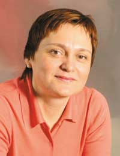

| В интервью редактору отдела аппаратных средств "BYTE/Россия" Александру Николову руководитель отдела по продвижению серверных продуктов представительства Microsoft в России Татьяна Демьянкова рассказывает об основных продуктах, планируемых к выпуску в 2005 г., о планах борьбы с нелицензионным ПО, а также об отношении к сообществу open source. |  |
"BYTE/Россия": Начнем с самого животрепещущего, пожалуй, вопроса последнего времени - какова стратегия компании в отношении платформ AMD64 и Intel EM64T? Насколько они перспективны с точки зрения Microsoft, дают ли какой-либо выигрыш корпоративным потребителям и как могут улучшить жизнь индивидуальных пользователей?
Татьяна Демьянкова: В самом скором времени эти платформы займут лидирующие позиции в ИТ-индустрии. С выходом операционных систем Windows Server x64 Edition и Windows XP Pro x64 Edition, рассчитанных на поддержку платформ AMD64 и Intel EM64T, преимущества 64-разрядных вычислений станут доступны практически всем компаниям и организациям, а также индивидуальным пользователям, и позволят им поднять эффективность и производительность своей работы на новый уровень. Вместе с тем сегодня не все задачи могут быть решены с использованием мощностей 64-разрядных вычислений, поэтому 100%-ная эффективность при работе как с 32-, так и с 64-разрядными приложениями на платформах AMD64 и Intel EM64T становится дополнительным козырем в руках компаний и потребителей, желающих идти в ногу со временем, но не собирающихся за счет собственного бюджета бежать впереди прогресса. Благодаря особенностям этих систем пользователи получают возможность постепенно перейти на 64-разрядную платформу, сохранив при этом свои инвестиции в уже имеющиеся 32-разрядные решения.
"BYTE/Россия": В связи с этим скажем о наболевшем - расширение х86-64 существует на рынке несколько лет, но реального успеха из-за отсутствия массовой 64-разрядной ОС пока не имеет. Когда можно ожидать окончательной версии ОС Windows для платформ AMD64 и Intel EM64T?
Т. Д.: Сегодня, в день интервью, я не могу назвать точную дату. Официальное объявление о выходе этой ОС на рынок будет сделано на ближайшей конференции Windows Hardware Engineering Conference - WinHEC 2005, которая пройдет с 25 по 27 апреля.
"BYTE/Россия": Каковы, по оценкам Microsoft, сроки перехода ИТ-индустрии к 64-разрядным вычислениям, как скоро могут быть вытеснены 32-разрядные системы?
Т. Д.: На прошедшей в Сиэтле конференции WinHEC 2004 Билл Гейтс сказал, что к концу 2005 г. все серверные процессоры, поставляемые на рынок AMD, и большинство процессоров, поставляемых Intel, будут 64-разрядными, что полностью совпадает с теми сообщениями, которые поступают и от Intel, и от AMD. Мы убеждены, что 64-разрядная платформа - ведущая платформа будущего. В этом плане 2005 г. можно считать переломным для ИТ-индустрии, поскольку уже сегодня Microsoft совместно с партнерами предлагает широкую линейку 64-разрядных решений - от рабочих станций до центров обработки данных и при этом ведет серьезнейшую работу с ISV-партнерами, нацеленную на увеличение числа приложений для 64-разрядной платформы, и с производителями аппаратного обеспечения - для ускорения разработки драйверов.
"BYTE/Россия": Кстати, о центрах обработки данных. Насколько уверенно чувствует себя Microsoft в секторе сверхтяжелых корпоративных систем, конкурируя с фирменными Unix-системами компаний? Глядя со стороны, трудно назвать это направление приоритетным для корпорации. Существуют ли у Microsoft какие-либо планы более активного продвижения в сегменте ПО для 64-разрядной платформы Intel IA64, каковы перспективы компании в этом сегменте?
Т. Д.: Microsoft рассматривает 64-разрядную платформу Itanium как весьма перспективную. Напомню читателям, что практически с момента выхода на рынок процессора Itanium мы выпустили Windows Server 2003 for Itanium-based systems и SQL Server 2000 Enterprise Edition (64-bit). Одно из главных конкурентных преимуществ этой платформы перед дорогостоящими Unix-системами на RISC-платформе и мэйнфреймами - оптимальное соотношение производительности и стоимости готового решения. Действуя совместно со своими партнерами, Microsoft продолжит активное продвижение этой платформы, фокусируясь на корпоративном и государственном секторе. Для информации добавлю: два решения от Hewlett-Packard на базе HP Integrity Superdome (Itanium2, Windows Server 2003 Dataсenter Edition for Itanium-based systems, SQL Server 2000 Enterprise Edition (64-bit) входят в десятку лучших согласно тестам TPC-C на производительность.
Что касается ближайшего будущего, Microsoft планирует и дальше продвигать и поддерживать уже существующие продукты Windows Server 2003 Enterprise и Dataсenter Edition для систем, базирующихся на Itanium, и SQL Server 2000 Enterprise Edition (64-bit). В дополнение к этому в нынешнем году планируются к выходу Visual Studio 2005, .NET Framework 2005 и SQL Server 2005, которые также будут поддерживать 64-разрядную платформу.
"BYTE/Россия": Насколько серьезна, по оценкам Microsoft, угроза со стороны сообщества open source, в частности конкурентного противостояния с ОС Linux, для традиционной бизнес-модели компании по разработке и продаже ПО?
Т. Д.: Давайте разберемся с терминами. Сообщество open source - это сообщество разработчиков, не объединенных ничем, кроме своей увлеченности созданием программных пакетов с открытыми исходными текстами. Результаты труда этих людей, т. е. программные пакеты, обычно можно свободно скачать из Интернета. Подчеркну, что это отдельные пакеты, о целостном продукте, в частности об операционной системе, здесь речь не идет. Соответственно ни о какой угрозе мы тоже не говорим. Если иметь в виду коммерческие дистрибутивы ОС Linux, т. е. ПО, которое "покупают", то это действительно операционная система, готовый продукт, поставляемый на рынок коммерческими компаниями, действующими в рамках общих для всех законов рынка.
Давайте рассмотрим и сравним бизнес-модели компаний, поставляющих на рынок ПО. Подавляющее большинство, и Microsoft входит в их число, продают лицензии, т. е. право на использование ПО. При этом в стоимость лицензии обычно включается техническое сопровождение продукта на несколько лет (предоставление обновлений, техническая поддержка и т. д.). Вторая модель продаж ПО, используемая, в частности, теми компаниями, которые предлагают рынку ОС семейства Linux, подразумевает продажу только технического сопровождения ПО. И теперь от абстрактных рассуждений о различных способах разработки мы переходим к совершенно конкретному сравнению конкурентных преимуществ двух ОС - их надежности, управляемости, масштабируемости и еще одного показателя, крайне важного для пользователей, когда речь идет об ОС, - количества и качества приложений и их интегрированности друг с другом. Конечно, в рамках этого интервью мы не будем вдаваться в технологическую дискуссию, хотя бы потому, что возможность высказаться есть только у одной стороны. Скажу только, что конкуренты у ОС Microsoft всегда были. И главная задача Microsoft - создавать решения, максимально соответствующие запросам клиентов, потому что последнее слово в любой конкурентной борьбе всегда остается за пользователями.
"BYTE/Россия": Расскажите, пожалуйста, о том, что ваша компания собирается противопоставить сообществу open source и проекту Linux, учитывая, что предыдущие начинания, направленные на перетягивание потребителей на свою сторону, окончились практически безрезультатно? Возможны ли более серьезные шаги в этом направлении - нечто большее, чем обычный маркетинг, например, значительное снижение цен на ПО, хотя бы для массового потребителя?
Т. Д.: Сразу скажу, что ни сейчас, ни в ближайшем будущем Microsoft не планирует менять ценовую политику на свою продукцию. Согласитесь, что создание надежного и качественного ПО требует очень серьезных инвестиций. И мы такие инвестиции делаем - миллиарды долларов мы тратим не только на создание ПО, максимально соответствующего нуждам потребителей, но и на предоставление дополнительных преимуществ пользователям лицензионного ПО. Что же касается перехода потребителей на ту или иную программную платформу, то причины, по которым, например, коммерческий банк "Космос", управляющая компания "Ренова" или школы Волгограда отказались от использования Linux в пользу Microsoft, заключаются в том, что клиенты нашли технологии open source более дорогими, более трудоемкими в изучении, использовании и поддержке.
"BYTE/Россия": Существуют ли планы раскрытия исходного кода ПО, принадлежащего корпорации, более активные и масштабные, чем сейчас, как в отношении раскрываемых систем, так и в отношении круга допущенных к ним специалистов?
Т. Д.: Мы полагаем, что планы предоставления доступа к исходным кодам продуктов Microsoft и их реализация на сегодняшний день полностью удовлетворяют запросам наших пользователей. Доступ к исходникам, осуществляемый в рамках программы Government Security Program (GSP), позволяет специалистам государственных организаций более чем 40 стран, подписавших соглашение об участии в программе, изучать коды продуктов Microsoft. В программе доступа к кодам под названием Shared Sources участвуют десятки университетов по всему миру. Ряд крупных частных компаний также имеет доступ к кодам. Поэтому все три группы общества, реально обладающие ресурсами для изучения кодов, - государство, университеты и крупные компании - имеют возможность их изучать. Что касается частных пользователей и небольших компаний, то, откровенно говоря, у них просто нет ресурсов для реального изучения миллионов строк кода. Убедиться же в качестве продуктов они могут на основании, например, проведенных государством сертификационных испытаний. В России изучением кодов могут заниматься очень многие организации: ФСБ, ФСТЭК, Министерство обороны и другие. И в конечном счете, если наше государство доверяет выводам этих организаций, то и остальные пользователи могут ими руководствоваться при принятии решения. В конце концов, никто ведь не вскрывает телевизор, чтобы убедиться, что "Ростест" провел испытания правильно.
"BYTE/Россия": Давайте взглянем на проблему конкуренции с несколько иной стороны - каково текущее положение дел с Windows Starter Edition и есть ли перспективы ее появления на российском рынке в ближайшее время?
Т. Д.: Целью проекта Windows XP Starter Edition было создание доступного ценового предложения, отвечающего потребностям людей, еще не имеющих опыта работы с персональным компьютером. Продукт ориентирован исключительно на домашнее использование и доступен только с новыми компьютерами начального уровня. В конце 2004 г. было объявлено об участии России в пилотном этапе программы - запуске Windows XP Starter Edition в пяти странах (Таиланд, Малайзия, Индонезия, Индия, Россия). В настоящий момент идет анализ результатов, полученных после запуска продукта в Таиланде, Малайзии и Индонезии, для определения сроков его появления в России и формирования планов его продвижения.
"BYTE/Россия": Расскажите поподробнее о стратегии продвижения Windows Starter Edition - рассматривает ли компания этот продукт как серьезного конкурента Linux?
Т. Д.: Еще раз подчеркну - ОС Windows XP Starter Edition ориентирована на людей, не имеющих никакого опыта работы с ПК, и разрабатывалась с целью создания на ИТ-рынке предложения для пользователей начального уровня. Основная цель ее выпуска - создать продукт, способный помочь людям начать использовать информационные технологии для облегчения жизни и более оперативного выполнения встающих перед ними задач (коммуникации, поиск информации и т. д.). Таким образом, можно сказать, что эта операционная система нацелена на то, чтобы расширить спектр предложения Microsoft на рынке клиентских ОС.
"BYTE/Россия": Ожидает ли компания серьезного спроса на этот продукт? Если да, то с чьей стороны - производителей ПК, корпоративных заказчиков или индивидуальных потребителей?
Т. Д.: Необходимо особо отметить, что OC Windows XP Starter Edition ориентирована исключительно на домашнее использование и не подходит для организаций в силу ряда функциональных ограничений - например, в ней отсутствует возможность работы в локальной сети. Спрос же со стороны производителей ПК возможен только как отражение спроса со стороны потребителей.
"BYTE/Россия": Еще один жизненно важный вопрос - предпринимаемые Microsoft меры борьбы с использованием и распространением нелицензионного ПО на российском рынке. Чего стоит ожидать корпоративным и индивидуальным пользователям в связи с инициативой по проверке подлинности ОС Windows при установке "заплаток" и обновлений? Какие еще инициативы планирует Microsoft в этом направлении в текущем году?
Т. Д.: Программа Windows Genuine Advantage (WGA) - это глобальная инициатива корпорации Microsoft, действующая не только в России, но и по всему миру. Она создана для того, чтобы повысить осведомленность потребителей о преимуществах использования подлинного ПО, и в настоящий момент идет ее пилотный этап, затрагивающий только сервис Download Center. До конца 2005 г. планируется распространить проверку подлинности и на сервис Windows Update. При этом все критические обновления и обновления безопасности по-прежнему будут доступны с помощью функции Auto Update вне зависимости от результатов проверки подлинности.
"BYTE/Россия": И в завершение нашей беседы - какие программные продукты ожидать российским пользователям в 2005 г., что они собой представляют, на кого рассчитаны?
Т. Д.: В первой половине года планируется появление ОС Windows XP Professional 64-bit Edition, ориентированной прежде всего на корпоративный рынок и высокопроизводительные приложения. Во второй половине ожидается выход русской версии Windows XP Media Center Edition. Данный продукт ориентирован исключительно на домашних пользователей и обеспечивает новый уровень удобства работы с компьютером как единым центром обработки мультимедийных данных.
Кроме того, в 2005 г. появится русская версия Navision 4.0 - комплексного решения Microsoft Business Solutions, предназначенного для автоматизации всех видов хозяйственной деятельности небольших и средних предприятий с любой отраслевой и бизнес-спецификой.
Если говорить о серверных продуктах, помимо тех, о которых я уже рассказала, осенью планируется выпуск промежуточной версии Windows Server 2003 под кодовым именем R2. Он будет основан на Windows Server 2003 SP1, и в него войдут дополнительные, отдельно устанавливаемые компоненты, наиболее часто запрашиваемые нашими заказчиками. Также Microsoft выпустит в этом году новую версию нашей СУБД - SQL Server 2005, рассчитанную на широкий спектр применения - от построения простых приложений до хранения и анализа данных в критически важных для бизнеса областях.
Не забыты и программисты - пакет средств разработки Visual Studio 2005 Team System, нацеленный на разработчиков, начиная от любителей и до высококлассных корпоративных команд, выйдет в свет в этом году.
Еще один продукт нынешнего года - масштабируемое решение корпоративного уровня под названием Live Communications Server 2005, предназначенное для обмена мгновенными сообщениями и интегрированной службы присутствия. Под обменом мгновенными сообщениями подразумевается передача текстовых сообщений в режиме реального времени по IP-сети, такой, как обычный Интернет или корпоративная сеть. Информация о присутствии - это по сути возможность получать данные о доступности кого-то из пользователей на одном или нескольких устройствах. При этом Live Communications Server также поддерживает аудио- и видеопотоки в режиме peer-to-peer, дает возможность совместного использования приложений и обеспечивает взаимодействие пользователей при работе с данными.
И, наконец, еще один продукт - Microsoft Office Communicator 2005. Это новый клиент корпоративного уровня для взаимодействия в режиме реального времени. Он интегрируется в существующие бизнес-приложения и выводит корпоративный телефон на новый уровень взаимодействия в рамках других способов.
"BYTE/Россия": Спасибо Вам за ответы, надеемся, в скором времени нам еще доведется подробнее побеседовать с Вами о стратегии корпорации Microsoft вообще и сообществе open source в частности.